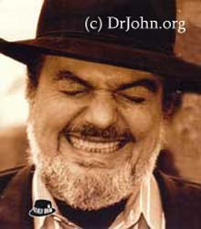

Он играл в барах с четырнадцати; потом стал подрабатывать в местной студии грамзаписи, познакомился со всей музыкальной элитой города, включая легендарного Профессора Лонгхэйра и Алена Тюссо, начал сочинять песни. В 60-е одна из них вошла в американскую двадцатку, после чего Мак стал задумываться о сольной карьере.
Поработав в студии Фила Спектора и поучаствовав в создании знаменитой спекторовской "стены звука", Ребеннак выпустил в 1968-м свой первый альбом Gris-Gris. Именно на этой пластинке он представился как Доктор Джон, Ночной путник (Dr. John The Night Tripper). Доктор Джон Монтень - так звали одного из жителей Нового Орлеана, который прославился во второй половине XIX века как народный целитель и оккультист (помимо того, что был наследным принцем африканского племени бамбарра), и Ребеннак, увлекавшийся вудуизмом, присвоил себе его имя. Этот псевдоним приклеился к нему навсегда.
Музыка Доктора Джона представляла собой смесь креольского фольклора, традиционного блюза и набиравшей силы психоделии - в его трактовке куда более убедительной, поскольку Доктор знал, о чем петь. Он одевался в причудливые костюмы и головные уборы, крашенные разноцаетными перьями, он пел про тех же магов вуду - но врожденное чувство юмора не позволячло ему относится кк оккультизму чересчур уж всерьезно, и потому в песнях Ребеннака вуду кажется не более чем страшной сказкой.
Первые три альбома Доктора стали известны среди музыкантов; в число его поклонников попали Эрик Клэптон и Мик Джаггер, что и привело к их участию в альбоме-1971 The Sun, The Moon & The Herbs. На следующий год Доктор Джон записывает Gumbo, один из лучших своих альбомов, недостающее звено между эсид-роком, блюзом и ранним рок-н-роллом, щедро приправленное нью-орлеанскими специями. В 1973-м он принимает участие в записи совместного альбома с Майклом Блумфилдом и Джоном Хэммондом-младшим; диск, названный Triumvirate, произвел на свет один хит, но более ничем интересен не был - по отдельности все трое участников оказались куда интереснее.
В семидесятые популярность Доктора Джона была стабильной, но за рамки ритм-н-блюзового круга не выходила. Он много сотрудничал с другими музыкантами, как сайдмен, играл нью-орлеанские стандарты, но ничем не выделялся. Прорывом стали 80-е, и начались они с фортепианного альбома Dr. John Plays Mac Rebennack - а завершились альбомом популярных джазовых стандартов In A Sentimental Mood. За дуэт с этого альбома Makin' Whoopee, записанный с певицей Рикки Ли Джонс, Доктор получил свой первый "Грэмми>.
В 90-х Доктор проявлял все больше интереса к двум вещам - джазу и собственным корням. Он записал небесспорный, хотя и любопытный альбом Bluesiana Triangle вместе с гениальным барабанщиком Артом Блэйки и саксофонистом Дэвидом Ньюменом, а к записи альбома Anutha Zone привлек музыкантов, казалось бы, совсем других поколений и ориентации - Пола Уэллера, участников Supergrass, Spiritualized, Primal Scream и даже Portishead! И доказал этим альбомом, что новоролеанские штучки (на обложке он, уже постаревший, но не утративший своей фантастической грузной элегантности, снова восседает в том же невероятном головном уборе, что носил двадцать пять лет назад) и британская молодежь отнюдь не противоречат друг другу:
Новый век начался для Доктора великолепным альбомом Duke Elegant - посвящением памяти Дюка Эллингтона. Не впервые обратившись к наследию одной из икон классического джаза, Доктор здесь словно заново открыл мелодии Эллингтона, ставшие, на невзыскательный вкус, классически-банальными. И подзаголовок альбома - The Doc Meets The Duke - абсолютно правомерен: если это и соавторство, то по крайней мере рукопожатие двух Музыкантов.
Доктор Джон - живое доказательство тезису: ремесло и искусство отделяет тонкая грань, но без ремесла искусства нет. Его ремеслу отдавали должное Джек Брюс, Марианна Фэйтфулл, Эрита Фрэнклин, Йен Гиллан и Роджер Гловер, Питер Грин, Вэн Моррисон, Би Би Кинг и Леон Редбоун, Ринго Старр и Карли Саймон: Кому-то он записывал партии клавишных, кому-то делал аранжировки, с Ринго и его All Starr Band даже ездил в турне - и все это он делал с удовольствием. Именно поэтому его ремесло становится искусством даже на чужих альбомах.
А еще Доктор Джон - человек-музей, хранитель традиций родного города. И ему есть что хранить - своим новым альбомом с непроизносимым даже для носителей английского языка названием он открывает для нас еще одну грань Нового Орлеана - города-легенды, города, неподалеку от которого находится тот самый Дом Восходящего Солнца.
© 2004, Артем Липатов